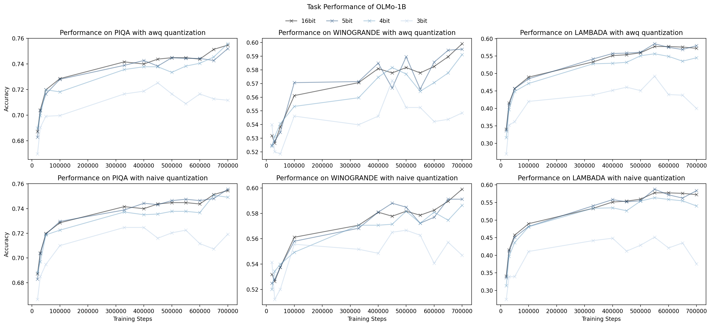

| Exploring the Causes & Effects of Quantization-induced Degradation in LLMs | |||
| Reece Shuttleworth | |||
| MIT | |||
Background
Quantization
Quantization takes values of a certain precision and converts them to a lower precision. This is a lossy process. For example, converting from FP32 to FP16 may lead cause the number to lose some of its least significant values. Making this conversion is good performance, because with this change it is easier to store and move weights and more efficient to do MACs.The goal of model quantization is to reduce the size of the model while preserving performance as much as possible. While there are many ways to do quantization, this work focuses on two: zero-point round-to-nearest (RTN) and activation-aware quantization (AWQ). Zero-point RTN works by rounding every value to its nearest corresponding value in a new range, which is dictated by the maximum and minimum number in the set of numbers that are going to be quantized, as shown in the graphic below. We call this method 'naive' in this article going forward because it is not informed by the activations: it only acts on the weights.
In contrast, AWQ works by implementing the same method as zero-point RTN, but with a twist: before quantization, weights are scaled up and activations are scaled down in order to reduce the quantization error associated with quantizing large activations. These scaling factors are commonly found via search and using a small calibration set in order to identify channels that commonly have large activations. AWQ has been shown to reduce quantization loss for LLMs.

Quantization-induced Degradation
Recent work has found that models that are pre-trained for longer have higher loss after post-training quantization (PTQ) than models that were trained on fewer tokens[1,2]. Specifically, they find that when using 3-5 bits of weight-only quantization, loss goes up more on models pre-trained for longer. This phenomenon is called Quantization-induced Degradation. Eventually, models trained for a long time actually have higher loss post quantization than lose trained for a shorter period of time. This can be observed in our Figure 1, where we reproduced the finding.Large Activations in LLMs
Previous work has found that LLMs, particularly those trained to low perplexity, have large activations. These large activations generally occur in specific channels[4] for tokens and certain tokens like space or new line characters[15]. These are difficult to quantize becuase they increase the quantization range (as described above) and increase the error. To combat this, techniques like Mixed-Precision[4] and AWQ[5] have been developed to handle these large activations and reduce the quantization error. talk about llm int8 and massive activations findings. 
Figure 2: In contrast to Figure q, when we measure task performance of
the quantized models, we see that 4 and 5 bit perform almost
equivalently to full precision. This is across 3 datasets and two
quantization methods.